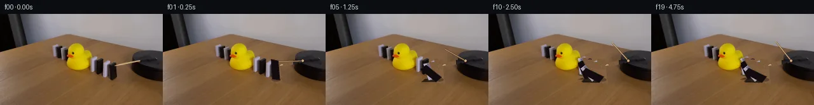

![首帧]()

Round 00
2026-11-06T06:41:11.766838+00:00像素候选变化代码 +254/−0inspection 更新
pixels 26e7b1e365735e41 · code c173bf52d78f2d7c
查看本轮 generate.py 真实 diff
--- previous/generate.py
+++ current/generate.py
@@ -0,0 +1,254 @@
+"""PixelWorld-Vision-Input generator for case_0057.
+
+Method (see METHOD.md/OBSERVATION.md for details): frame 0 is the untouched
+first_frame.png. For frames 1-19 the rotating wooden stick and the four
+domino blocks to the right of the rubber duck are erased against a locally
+reconstructed wooden-table / platform background and redrawn as rigid
+rotating quads with moving contact shadows (3x supersampled overlay).
+Everything else (duck, left blocks, wall, platform body) stays identical.
+Pure local numpy/PIL pixel work; no external models or assets.
+"""
+from pathlib import Path
+import math
+import numpy as np
+from PIL import Image, ImageDraw
+import artifact_io
+
+CASE = Path(__file__).parent
+SS = 3 # supersampling factor for the motion overlay
+
+# ---------------------------------------------------------------- backgrounds
+f0 = np.array(Image.open(CASE / 'first_frame.png').convert('RGB'))
+H, W, _ = f0.shape
+assert (H, W) == (144, 256)
+
+# clear wood reference strip (x 46..74 is tabletop on every row we need)
+SX0, SX1 = 46, 75
+strip = f0[:, SX0:SX1].astype(np.float32)
+row_mean = strip.mean(axis=1) # (144,3)
+resid = strip - row_mean[:, None, :] # grain residual
+
+_rng = np.random.default_rng(5707)
+_noise = _rng.normal(0, 2.2, (H, W, 1)).astype(np.float32)
+
+def wood_bg(xs, ys):
+ """Reconstructed tabletop colour at integer pixel arrays."""
+ k = ((xs * 5 + ys * 11) % (SX1 - SX0))
+ r = resid[ys, k] # (n,3)
+ col = row_mean[ys] + r + _noise[ys, xs]
+ # gentle global lighting: table very slightly brighter toward x~170
+ col *= (1.0 + 0.00045 * (xs - 110))[..., None]
+ return np.clip(col, 0, 255)
+
+# per-row platform top-surface colour (sampled well inside the puck)
+plat_rows = {}
+for y in range(64, 110):
+ plat_rows[y] = np.median(f0[y, 228:252].astype(np.float32), axis=0)
+
+def platform_bg(xs, ys):
+ out = np.empty((len(xs), 3), np.float32)
+ for i, y in enumerate(ys):
+ out[i] = plat_rows.get(int(y), np.array((14., 12., 14.)))
+ return np.clip(out + _noise[ys, xs], 0, 255)
+
+# --------------------------------------------------------------------- masks
+def poly_mask(points):
+ m = Image.new('L', (W, H), 0)
+ ImageDraw.Draw(m).polygon([tuple(p) for p in points], fill=255)
+ return np.array(m) > 0
+
+def dilate(mask, it=1):
+ m = mask
+ for _ in range(it):
+ m = m | np.roll(m, 1, 0) | np.roll(m, -1, 0) \
+ | np.roll(m, 1, 1) | np.roll(m, -1, 1)
+ return m
+
+# upright block quads: (bl, br, tr, tl)
+BLOCKS = {
+ 'W1': dict(colour='w', h=26, base=(148.5, 95.5),
+ quad=[(144, 95), (153, 96), (152, 70), (145, 69)]),
+ 'B1': dict(colour='b', h=29, base=(156.5, 101.5),
+ quad=[(151, 101), (162, 102), (161, 73), (152, 72)]),
+ 'W2': dict(colour='w', h=27, base=(167.5, 103.5),
+ quad=[(162, 103), (173, 104), (172, 77), (163, 76)]),
+ 'B2': dict(colour='b', h=32, base=(178.0, 104.0),
+ quad=[(172, 103), (184, 105), (183, 74), (172, 71)]),
+}
+block_mask = {}
+for name, b in BLOCKS.items():
+ bl, br, tr, tl = b['quad']
+ m = poly_mask(b['quad'])
+ # include the soft contact shadow a few px under the base
+ shadow_pad = [(bl[0] - 1, bl[1]), (br[0] + 2, br[1]),
+ (br[0] + 2, br[1] + 4), (bl[0] - 1, bl[1] + 4)]
+ m |= poly_mask(shadow_pad)
+ block_mask[name] = dilate(m, 1)
+
… diff truncated; 167 more lines …